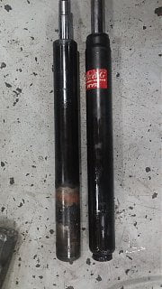
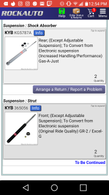

-
Bought Kyb's from rock auto but when my buddy tried to help install them we noticed a size difference. Is this because I'm not converting from electronic adjustable suspension? I bought Kybs for the rear too but havent had time to see if they'll fit. I have an 87 NA 2+2. I'll include pictures of what i bought and size comparison to oem. Are we doing something wrong here or should i return the fronts or all four? Thanks. On a side note I should buy a bushings set shouldn't I?  -
Seems like conflicting info. It says "except adjustable" and "to convert from electronic". Adjustable and electronic are the same thing. -
Are you sure you had adjustable? I never recall that option for a NA 2+2? -
they will fit. unless your car is turbo charged. 84-89 turbos had the nice adjustables. my NA 87 2+2 had the KYB struts put on it with no issues. my 84 AE however had to have the adapter kit for the fronts and the rears. i had to replace the failing stock adjusty mcphearson struts and the KYBs worked fine for that car as well.
I think you guys might be doing something wrong in your installation. those thick black struts should fit right in for the fronts and the white ones in the rear.
compare the two sets of KYBs in the two links below: they should be identically the same kits with the same part numbers of the ones you got from Rockauto.
and while you're in there, replace all your old bushings if they are originals. now is the time to do it. trust me, i had to do it on both of my Z31s.
it definately improves the ride. be sure to get new ball joints, tie rods, steering rod boots, and remember the tension rod bushings for the 88 cars are different than the 87 and earlier models. also be sure to get the boots and bump stops for your shock struts or else you'll be banging and clanging down the road everytime you hit bumps. this would also be a good time to change the engine mounts if they are worn out.
https://www.thezstore.com/page/TZS/P…c20b01/23-4013
https://www.thezstore.com/page/TZS/P…c20b01/23-4014
hope this helps,
cheersLast edited by bonfire79; 07-31-2019, 05:54 AM.

Copyright © 2006–. All rights reserved. Privacy Policy